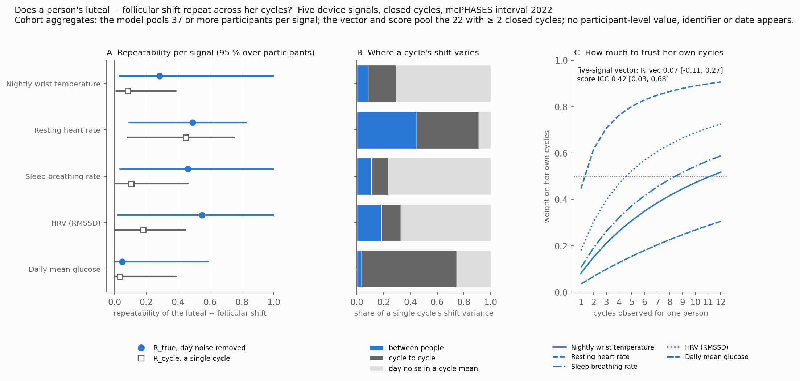
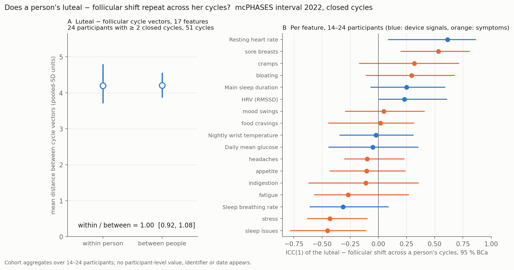

flowchart LR
A[42 participants<br/>3,698 labelled days] --> M[Daily values, every closed cycle<br/>37–42 participants per signal]
M --> V[person · cycle · day<br/>variance components]
A --> S[One shift per closed cycle<br/>22 participants with ≥ 2 cycles]
S --> D[Vector distances → R_vec<br/>responsiveness score → ICC]
Does a person’s shift repeat?
The luteal − follicular shift of five device signals, closed cycles, interval 2022. Day noise separated from cycle-to-cycle and person-to-person variation.
Yes for resting heart rate, barely for wrist temperature. A three-level model of the daily values (person, cycle, day) splits each signal’s luteal shift into its parts. Resting heart rate: between-person SD 1.9 bpm [0.7, 2.7] on a 3.0 bpm cohort shift, repeatability 0.49 [0.09, 0.83]; two of a person’s own cycles already outweigh the cohort mean. Wrist temperature: SD 0.11 °C [0.04, 0.27] on a 0.28 °C shift, single-cycle repeatability 0.08, eleven cycles to break even. Over the five signals the personal part of the shift vector is small: R_vec 0.07 [−0.11, 0.27], 75 % of resamples positive.

Per signal
| Signal | Cohort shift | Between-person SD [95 %] | Cycle SD | Day SD | Repeatability, day noise removed | Single cycle | Weight at 2, 3 cycles |
|---|---|---|---|---|---|---|---|
| Resting heart rate (bpm) | +3.0 | 1.9 [0.7, 2.7] | 2.0 | 1.7 | 0.49 [0.09, 0.83] | 0.45 | 0.62, 0.71 |
| Nightly wrist temperature (°C) | +0.28 | 0.11 [0.04, 0.27] | 0.17 | 0.58 | 0.28 [0.03, 1.00] | 0.08 | 0.15, 0.21 |
| Sleep breathing rate (/min) | +0.53 | 0.18 [0.04, 0.57] | 0.19 | 0.93 | 0.46 [0.03, 1.00] | 0.11 | 0.19, 0.26 |
| HRV, RMSSD (ms) | −2.5 | 3.1 [0.1, 8.0] | 2.8 | 12.0 | 0.55 [0.02, 1.00] | 0.18 | 0.31, 0.40 |
| Daily mean glucose (mmol/L) | +0.21 | 0.10 [0.01, 0.31] | 0.45 | 0.51 | 0.05 [0.00, 0.59] | 0.04 | 0.07, 0.10 |
Intervals from 500 participant refits each, percentile. The upper limits of three repeatabilities reach 1.00 because a ratio’s interval is uninformative above when the cycle component can vanish in a resample; the lower limits carry the message.
Vector and score
| Quantity | Five device signals | With sore breasts added |
|---|---|---|
| Participants with ≥ 2 closed cycles | 22 of 39 | 21 of 39 |
| Within / between distance ratio | 0.95 [0.81, 1.05] | 0.90 [0.76, 1.01] |
| R_vec, the personal share of the vector | 0.07 [−0.11, 0.27] | 0.16 [−0.06, 0.37] |
| Responsiveness score ICC | 0.42 [0.03, 0.68] | 0.45 [0.08, 0.69] |
The score asks a narrower question than the vector: not whether a person’s whole shift pattern is her own, but whether the size of her shift along the shared direction is. It has the clearer answer.
Read with
- Two or three cycles per person, 22 people for the vector; 21 to 34 with two or more cycles per signal for the model. Nothing here is a precise personal repeatability, only its presence for resting heart rate and its smallness for temperature.
- Day noise dominates temperature: 71 % of a single cycle’s temperature shift is night-to-night noise in the phase means, 21 % cycle-to-cycle, 8 % the person. Glucose’s shift varies from cycle to cycle more than between people.
- Sore breasts, the one symptom checked, is itself repeatable (SD 0.44 points [0.11, 0.62]); symptoms were reported while participants saw the app’s phase predictions.
- Closed cycles from menstrual onsets in the labels, 10–60 days; the short “Follicular” label is the reference; nothing uses the 2024 interval.
The earlier check: 17 features on the between-person scale
Before the model above, a cruder check put all 17 features (six device signals and eleven symptoms) on a common scale, the between-person spread of phase means, and asked whether a person’s cycle vectors lie closer to each other than to other people’s. They did not: ratio 1.00 [0.92, 1.08] over 24 participants. On that scale a consistent 3 bpm shift against baselines that differ by 7 bpm between people counts for less than a one-point symptom shift, and the symptom noise swamps the device signals. Per feature, resting heart rate was already the one repeatable signal (ICC 0.61 [0.09, 0.86], 14 participants) and temperature already was not (−0.02 [−0.34, 0.31]).

Tables: tables/rep03_components.csv, tables/rep03_design_curve.csv, tables/rep03_summary.json; the earlier check’s tables/feature_icc.csv and tables/repeatability_summary.json.